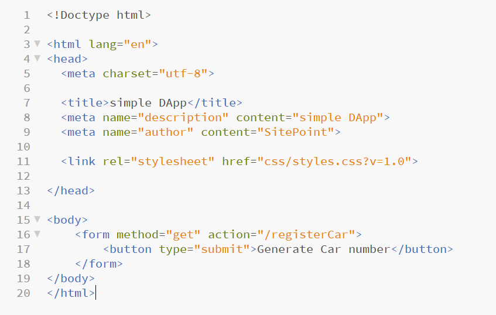
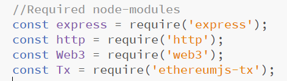
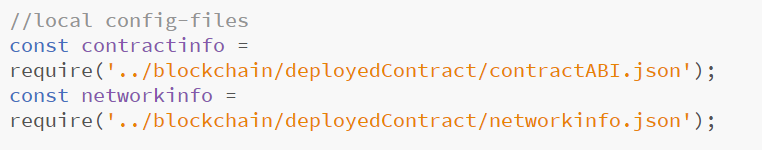

How to create a static web page and run it on local host:
- Step 1: Writing the smart contact:
- Step 2: Writing the Frontent:
- Step 3: Interact with the smart contract through web3.js:
when we write the smart contract and deploy it on the remix we c an copy the ABI from the remix and save it in a file called contract.jason, we also copy the address of the deployed contact in our jason file, incase we need to use it later, since we deployed on the ropsten testnet, we can find all transaction done by this contract on https://ropsten.etherscan.io/address/ + smartContractAddress. then we need another file called networkinfo.json ,which we'll be using later, what we save in this file is our infura account information public key adress and the private key address.

in the frontend, we keep it very simple :
This part may be complicated because the lack of Documentation on web3.js. first, we create a server.js file and add Required node-modules such as:
then we add the path of those 2 jason file that contains our ABI and our networkInfo.
then we save our needed information from theses two files in seprate variable such as const abi or const infura-url, by simply calling :"const abi= contractinfo.abi". in the next step we create new instance of web3 and set the provider:
const web3 = new Web3(new Web3.providers.HttpProvider('http://localhost:port'))
const contract = new web3.eth.Contract(abi, contractAddress);
let app = express();
http.Server(app).listen(80);
app.get('/', function(req, res) {
res.sendFile('index.html', {root:__dirname });
});